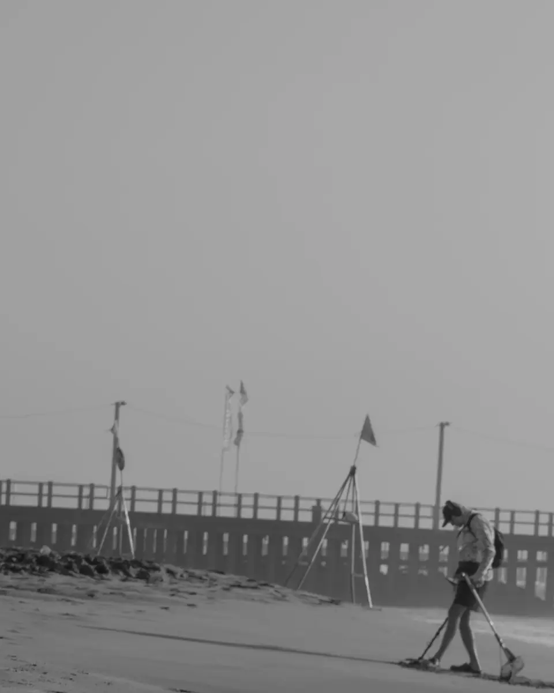

About me
Alwin Newman.
I’m Alwin, a photographer based in Kempton Park. I shoot portraits, couples, families and social content on location.
I’ll help you choose a location and clothing, and guide you through the shoot. You don’t need to know how to pose.
Sessions are available in the mornings and on weekends, by appointment.
Shutterhaus Visuals began in 2019 as an independent studio, and the work is still made the same way: on location, in natural light, with one photographer you deal with from the first email to the last file.
- Based
- Kempton Park, Gauteng
- Travel
- On location across Gauteng. Travel within 25 km of Kempton Park is included.
- Hours
- Mornings and weekends, by appointment
- Delivery
- Private online gallery, 7–14 days
- Since
- 2019
